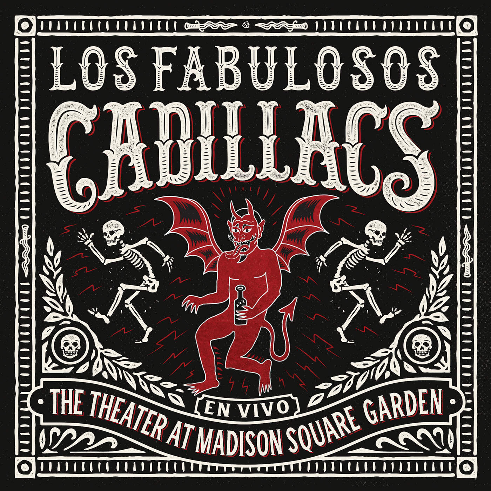
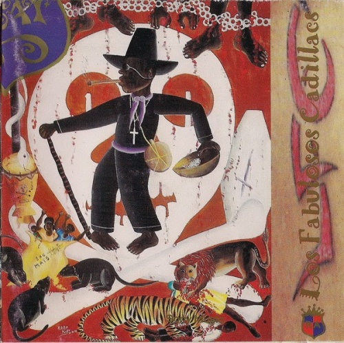
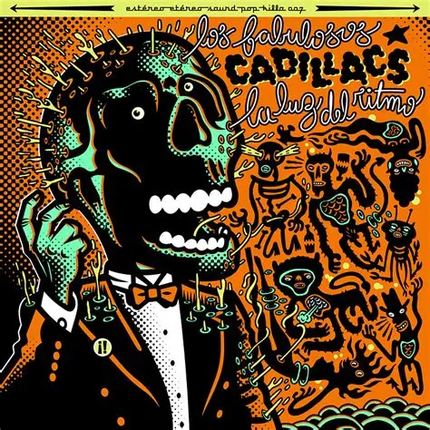

Historia
La historia de Los Fabulosos Cadillacs comienza en 1984,
cuando se juntaron Mario Siperman, Aníbal Rigozzi, Vicentico y Flavio Cianciarulo.
Provenían de bandas efímeras gestadas durante el colegio secundario entre 1982 y 1983, como Mantra, Spray, Maracaibo y Azur.
Ninguno de ellos sabía de música, pero formaron una agrupación solo por el gusto de tocar siendo una banda subterránea.
Tenían como influencias más fuertes a las bandas del revival del ska en Inglaterra, tales como Madness, The Specials, The Selecter o English Beat, y de ellos copiaban la imagen.
Información
- Por un corto tiempo el grupo se llamó Cadillacs 57, en honor al modelo de auto (de la marca de vehículos estadounidense Cadillac) del bajista del grupo, Flavio Cianciarulo y con el que alcanzaron a hacer algunas actuaciones.
- En una reunión que tuvieron en la casa de Vicentico, entre todos decidieron cambiar el nombre por consejo de su mánager entre 1985 y 1987, Poppy Manzanedo.
- De allí surgió el nombre definitivo, Los Fabulosos Cadillacs, y Naco Goldfinger diseñó el logo de la banda el sombrero ska y su respectiva banda blanca y negra a cuadrados
Ficha técnica
| Inicio de carerra | Nombres completo real | Curiosidades |
|---|---|---|
| La historia de Los Fabulosos Cadillacs comienza en 1984 | se juntaron Mario Siperman, Aníbal Rigozzi, Vicentico y Flavio Cianciarulo. Provenían de bandas efímeras gestadas durante el colegio secundario entre 1982 y 1983, como Mantra, Spray, Maracaibo y Azur. |
Su segundo disco fue llamado Yo te avisé!! y, a diferencia del anterior, incursiona en otros géneros aparte del ska, como el reggae y el dub. |
| El ridmo mundial | Vuelta al exito | separacion |
| En el año 1988 lanzan su tercer disco: El ritmo mundial, grabado en los Estudios Panda, que continúa la tendencia experimental y ampliatoria de estilos, ritmos y géneros musicales hacia géneros más comerciales |
En mayo de 1992 sale a la venta El León. La placa combina todos los géneros practicados por los Cadillacs (salsa, calipso, reggae, ska) y se convirtió en un álbum esencial tanto en la historia de la banda como en la historia del rock argentino |
En el año 2002 los rumores de la separación de los Cadillacs se incrementaron ante la emigración de Flavio Cianciarulo a Monterrey, México, y con la preparación de discos solistas de algunos de sus integrantes, notoriamente de Vicentico, quien comenzaría una exitosa carrera solista |
Registro de fans
Galería
  conocer mas de este album